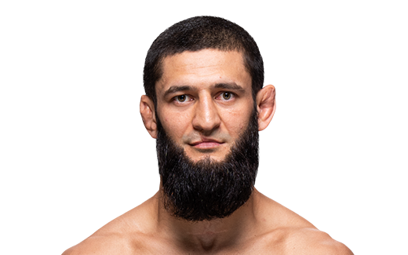
ハムザット・チマエフ#11
元教師サイコ スタンドの飛び膝 グラウンド技術トップクラス
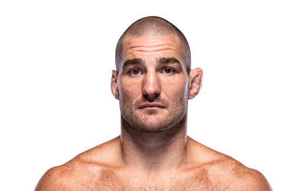
ショーン・ストリックランド#1
元教師サイコ スタンドの飛び膝 グラウンド技術トップクラス
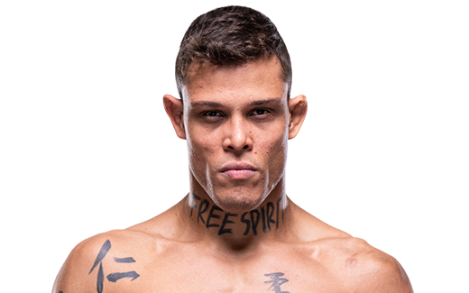
カイオ・ボハーリョ
元教師サイコ スタンドの飛び膝 グラウンド技術トップクラス
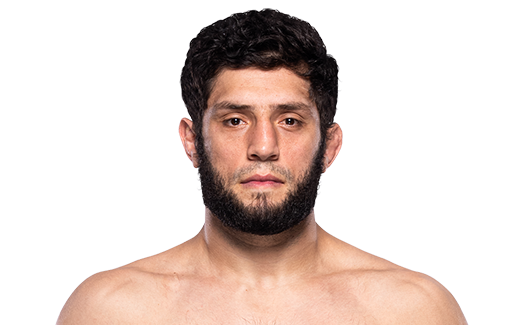
イクラム・アリスケロフ
チマエフが認めた男
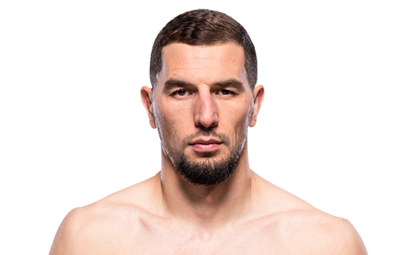
アブス・マゴメドフ
殺戮ストライカー スタミナ面が課題

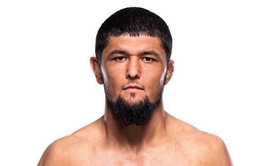
ヌルスルトン・ルジボエフ
バックリーには負けたが、スタンドセンスがずば抜けてる 将来性高い
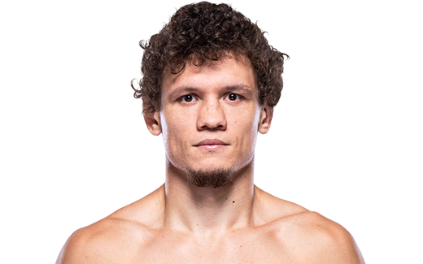
ロマン・コピィロフ
蹴りがとにかく上手い 左ミドルと左ハイが脅威 タックルもセザールアルメイダ戦ではみせていた
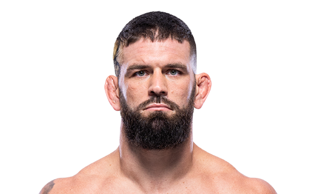
アンドレ・ペトロスキー
ufc戦績５連勝だったが、直近２連敗 今後に期待
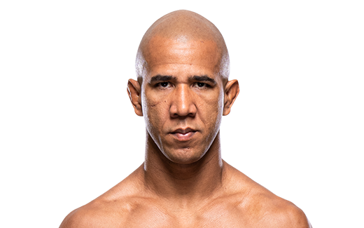
グレゴリー・ホドリゲス
ロボコップ bbj黒帯 レスリング優勝 常に前進してくる恐怖
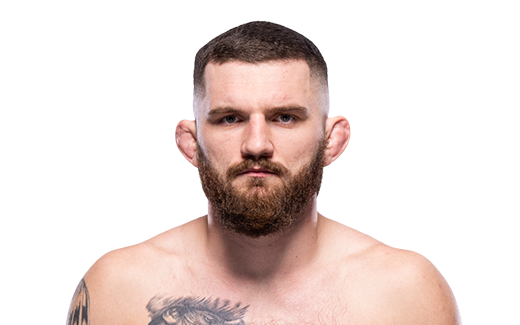
ミハル・オレクセイジュク
とにかくアグレッシブ 大体１ラウンドで負けるか勝つか
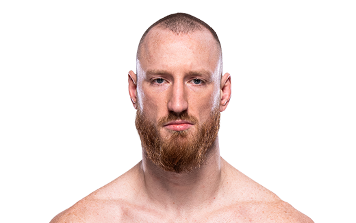
ジョー・パイファー
188cm、リーチ191cmでありながら全身凶器 スタミナが課題
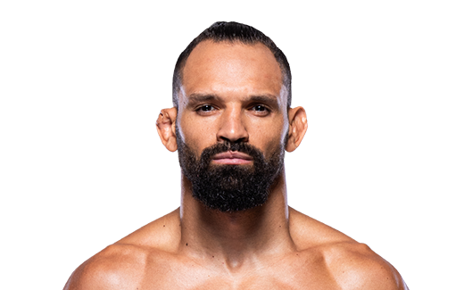
ミシェル・ペレイラ
４次元MMA １Ｒ決着量産
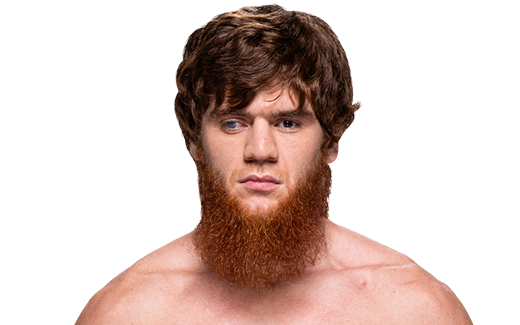
シャラ・マゴメドフ
蹴り技豊富 下からも蹴ってくる
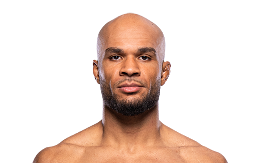
クリスチャン・リロイ・ダンカン
スタンドでの肘がうますぎる
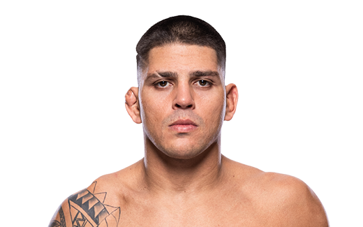
ブルンノ・フェヘイラ
UFCオール1Rフィニッシュ スタンドバッチバチ
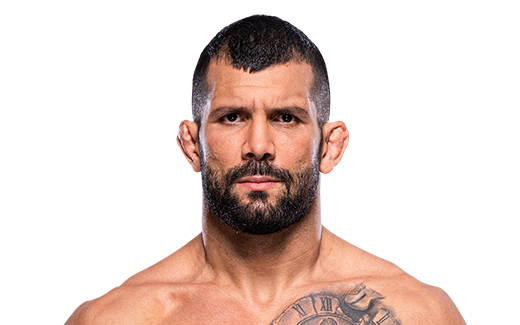
ホドルフォ・ヴィエラ
UFCオール1本勝ち 柔道金メダル１３個獲得